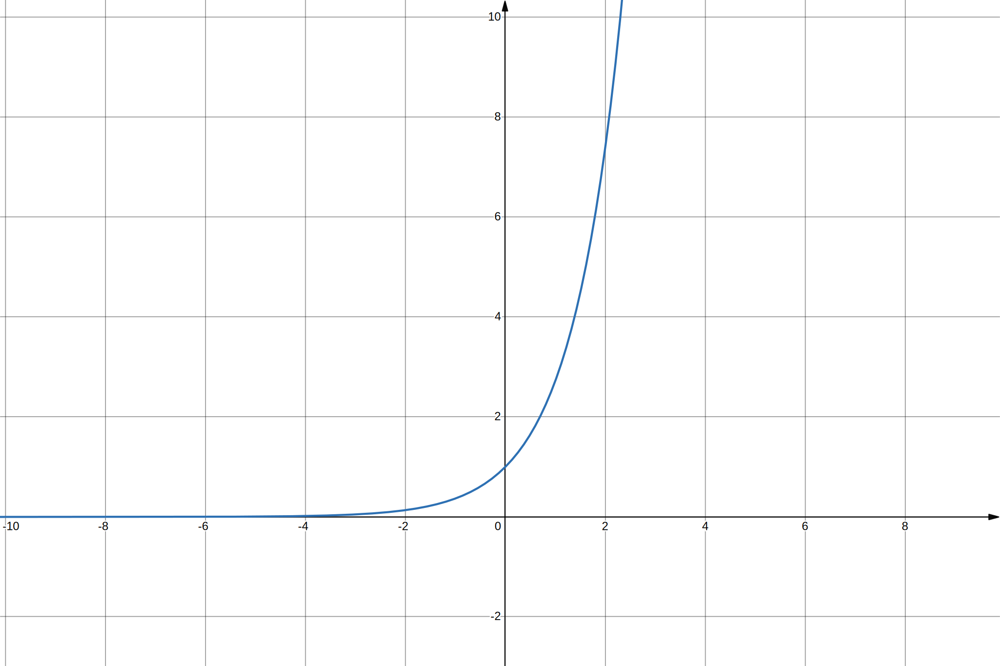

La fonction exponentielle est la fonction notée \(\exp\) qui est égale à sa propre dérivée
et prend la valeur \(1\) en \(0\).
On note \(\mathrm{e}\) la valeur de cette fonction en \(1\). Ce nombre \(\mathrm{e}\) qui
vaut approximativement \(2,71828\) s’appelle la base de la fonction exponentielle et permet
une autre notation de la fonction exponentielle :
$$
\quad \forall x \quad \exp(x) = \mathrm{e}^x
$$
La fonction exponentielle est la seule fonction continue sur \(\mathbb{R}\) qui transforme
une somme en produit et qui prend la valeur \(\mathrm{e}\) en \(1\). C’est un cas
particulier des fonctions de ce type appelées
exponentielles de base a.
Définitons
Par une équation différentielle
On appelle fonction exponentielle l’unique fonction dérivable solution du problème de Cauchy
suivant :
$$
\quad \begin{cases}
f' = f \\
f(0) = 1
\end{cases}
$$
À partir de la fonction logarithme népérien
La fonction \(\exp\), de \(\mathbb{R}\) dans \(\mathbb{R}^{+*}\), est la bijection
réciproque de la fonction logarithme népérien.
Par la propriété algébrique
La fonction \(\exp\) est l’unique fonction continue de \(\mathbb{R}\) dans
\(\mathbb{R}^{+*}\) transformant une somme en produit, c’est-à-dire vérifiant l’équation
fonctionnelle :
$$
\quad \forall u,v \in \mathbb{R} \quad f(u+v)=f(u)\times f(v)
$$
et prenant la valeur \(\mathrm{e}\) en \(1\).
Il est possible de s’affranchir de la nécessité de connaître au préalable \(\mathrm{e}\) par
la caractérisation suivante :
La fonction \(\exp\) est l’unique fonction continue de \(\mathbb{R}\) dans
\(\mathbb{R}^{+*}\) transformant une somme en produit, c’est-à-dire vérifiant l’équation
fonctionnelle :
$$
\quad \forall u,v \in \mathbb{R} \quad f(u+v)=f(u)\times f(v)
$$
et dont la dérivée prend la valeur \(1\) en \(0\).
Par une série entière
On peut définir l’application exponentielle \(\exp\) comme la somme d'une série entière de
rayon de convergence infini :
$$
\quad \exp(x) = \sum_{n=0}^{+\infty}{x^n \over n!}
$$
Étude de fonction

Tracé de la courbe \(y = \rm{e}^{x}\).
La fonction \(\exp\) prend en \(1\) une valeur notée \(\mathrm{e}\), qui vaut environ
\(2,718\) et est un nombre transcendant.
La fonction \(\exp\) est de classe \(C^{\infty}\).
La fonction \(\exp\) est strictement croissante de \(\mathbb{R}\) dans \(\mathbb{R}^{+*}\)
et :
$$
\quad \lim_{x\to -\infty}\exp(x)=0
$$
et
$$
\quad \lim_{x\to +\infty}\exp(x)=+\infty
$$
La fonction \(\exp\) tend vers \(+\infty\) plus rapidement que toute fonction polynomiale
quand sa variable tend vers \(+\infty\), c’est-à-dire que :
$$
\quad \lim_{x\to +\infty }{\frac{\exp(x)}{x^n}} = +\infty \quad \forall n \in \mathbb{N}
$$
Par changement de variable, on en déduit :
$$
\quad \lim_{x\to -\infty }x^{n}\exp(x)=0 \quad \forall n \in \mathbb{N}
$$